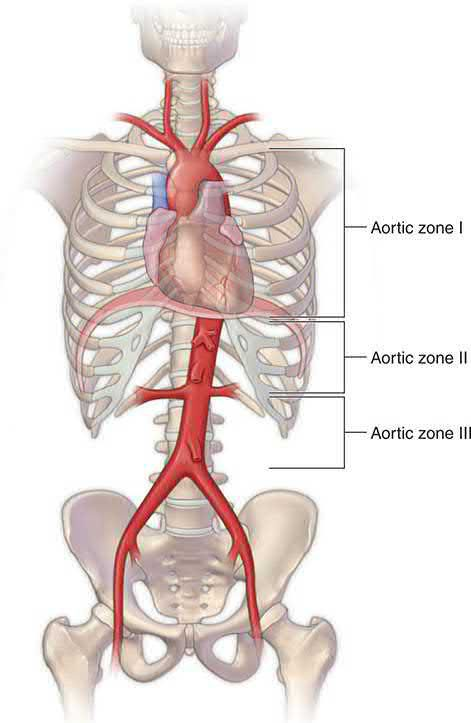
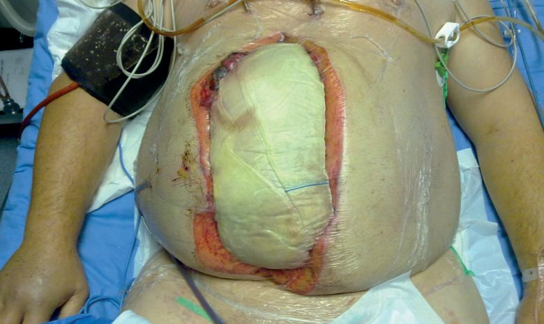
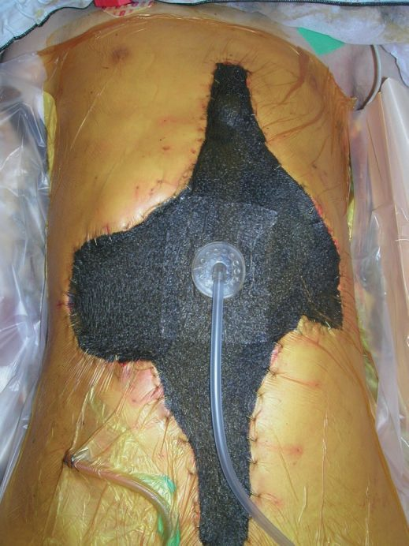
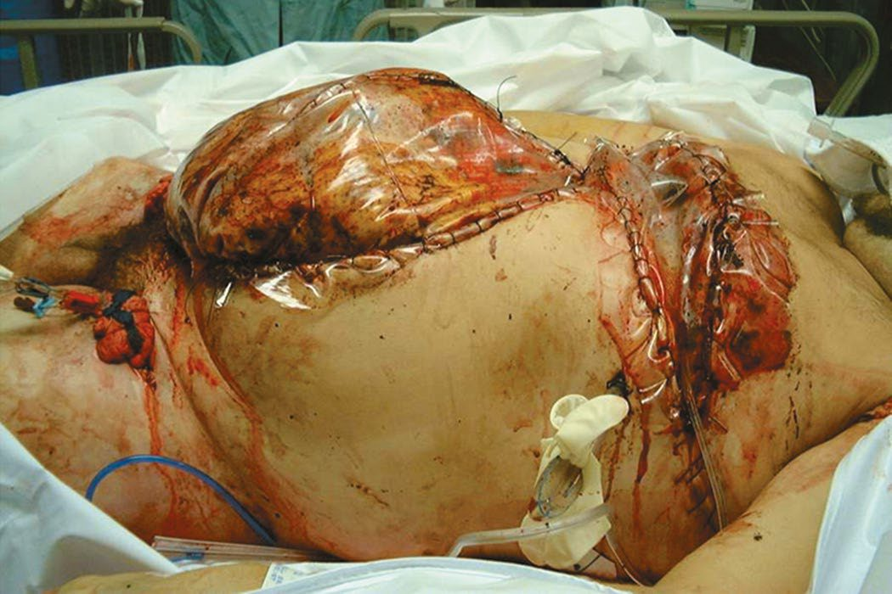

Damage Control Surgery
Summary
- Damage control surgery aims to break the "vicious cycle", or triad of death, of hypothermia, coagulopathy and acidosis by performing only the minimum surgery needed to control haemorrhage and contamination, deferring definitive anatomical repair until the patient's physiology has been restored in intensive care [1].
- The concept originated from a naval strategy in which ship damage was kept local, with only minimal repairs performed to keep the ship afloat until definitive repairs could be made safely in port [1].
- Bailey & Love states the analogy precisely: "damage control" ensures continued functioning of a damaged ship above conducting complete repairs, which would prevent rapid return to battle [2].
- Rotondo and associates first coined the term in a series of 46 patients with penetrating abdominal injury, in which a significant survival improvement was seen in the subset with major vascular injury and two or more visceral injuries, 77% versus 11%, P<0.02, despite similar overall survival between damage control and definitive laparotomy groups at 55% versus 58% [3].
NICE recommends damage control surgery by name, and keys the decision to a single variable: the response to volume resuscitation. The three recommendations sit together and their verbs carry the strength [4]:
| Haemodynamic status | Recommendation |
|---|---|
| Unstable and not responding to volume resuscitation | Use damage control surgery |
| Unstable but responding to volume resuscitation | Consider definitive surgery |
| Haemodynamic status normal | Use definitive surgery |
- Table reformats the NG39 surgical-strategy criteria [4].
- What is notable is what is absent: NICE sets no temperature, pH, lactate, coagulation or transfusion-volume threshold for the decision.
- Where the textbooks give a list of nine physiological and laboratory criteria, NICE gives one clinical question (is the patient responding?) and leaves the middle case, the responder, as the only one where the choice is left open.
The service requirement behind it is that hospital trust boards must ensure interventional radiology and definitive open surgery are equally and immediately available for haemorrhage control in all patients with active bleeding [5], so that a decision to pack and close rather than embolise is a physiological judgement and not a resource one.
Definition
- Damage control surgery is restricted to three goals: stopping active surgical bleeding, controlling contamination, and restoring normal physiology; anatomy is restored only once physiology is optimised [1][6].
- It is distinguished from early total care, the definitive management of a patient's injuries within 36 hours after a period of initial resuscitation, which is appropriate for the majority of trauma patients who respond well to resuscitation [7].
- Bailey & Love's four-item summary is the shortest statement of the doctrine: arrest haemorrhage, control sepsis, protect from further injury, nothing else [2].
- The operation is therefore tailored to match the patient's physiology, and is not focused on reconstructing anatomy [2].
Damage control resuscitation
- Damage control resuscitation, also called haemostatic resuscitation, is the broader paradigm that prioritises haemorrhage control in patients who are still actively bleeding, and its rationale is a negative one: no aspect of the shock state (end-organ perfusion, blood pressure, temperature, lactic acidosis) can be corrected while the patient is bleeding, and repeated cycles of volume resuscitation will exacerbate coagulopathy, hypothermia and metabolic derangement [2].
- Its introduction has been associated with substantial reductions in mortality from haemorrhagic shock over the last decade [2].
- It applies only while patients are bleeding, and rests on four principles [2]:
| Principle | Content |
|---|---|
| Rapid haemorrhage control | Direct pressure on external bleeding; temporary control by tourniquet or balloon occlusion; suspect and search for intracavitary haemorrhage; move the patient forwards to theatre or interventional radiology |
| Permissive hypotension | Allow the patient to set their own blood pressure while bleeding, avoiding continued volume resuscitation in a vain attempt to normalise perfusion |
| Avoid dilutional coagulopathy | Avoid clear fluids, crystalloid or colloid; transfuse an approximation of whole blood, usually equal volumes of packed red cells and plasma |
| Treat existing coagulation deficits | Tranexamic acid as soon as possible in almost all bleeding patients; component concentrates for specific deficits, cryoprecipitate for low fibrinogen, platelets for platelet dysfunction |
- Table reformats the four principles of damage control resuscitation [2].
- Schwartz's states the same four as permissive hypotension, minimising crystalloid-based resuscitation, immediate release and administration of predefined balanced blood products in ratios similar to whole blood, and the use of haemostatic adjuncts [8].
- The pre-DCR guidelines advocated volume replacement with crystalloid, then packed red cells, and only later plasma or platelets, a practice based on a few small uncontrolled retrospective studies using blood products that are no longer available [8].
Bailey & Love adds a distinction that determines when the paradigm applies at all: haemorrhage and shock often coexist but are not the same. Patients who are actively bleeding may not yet be in shock; conversely, patients may be in shock as a consequence of haemorrhage but no longer be actively bleeding. In patients who are bleeding, the priority is to stop bleeding; in patients who are not bleeding, the priority shifts to normalising end-organ perfusion [2].
Pathophysiology
- A subset of patients undergoing traditional definitive repair at the index operation develop progressive intraoperative physiological derangement with exacerbation of the lethal triad of hypothermia, coagulopathy and metabolic acidosis [3].
- Protracted surgery in a physiologically unstable patient can itself prove fatal; prolonged procedures cause additional trauma and further immune and physiological derangement, propagating the triad of death toward multi-organ failure and death [1][7].
- Core temperature loss during surgery is typically about 2 °C per hour of operating time, which is why operative time itself is a criterion for converting to damage control [1].
- Further heat is lost by opening body cavities during surgery, and severe acidosis and hypothermia both inhibit coagulation proteases and reduce coagulation function, leading to further bleeding and a downward spiral to physiological exhaustion and death [2].
- The coagulopathy that damage control exists to interrupt begins before any of that. Acute traumatic coagulopathy develops within minutes of injury in up to 25% of all trauma patients and is associated with a fourfold increase in mortality, characterised by systemic hyperfibrinolysis, low fibrinogen and platelet dysfunction.
- It then evolves into a multifactorial trauma-induced coagulopathy as resuscitation adds dilution of coagulation factors by fluid and red cell transfusion, hypothermia from underperfused muscle unable to generate heat and worsened by cold fluids, and acidaemia [2].
- Maingot's states the operational goal that follows: the aim is avoiding the potential irreversibility of sustained acidosis, hypothermia, coagulopathy and haemodynamic lability by delaying definitive operative management until the patient can be stabilised in the intensive care unit [9].
Clinical features
Patients requiring damage control typically present with ongoing haemorrhage refractory to initial measures, hypothermia, evidence of coagulopathy with oozing from all surfaces, and severe metabolic acidosis. Haemodynamically unstable patients with intra-abdominal bleeding will always proceed to rapid damage control laparotomy, which is often an easy decision for senior clinicians, while other cases require careful review of physiology and coagulation status [7].
Recognising the patient who is still bleeding
The clinical determination that drives everything else is not a static observation but a dynamic assessment of the blood pressure response to volume infusion [2]. Bailey & Love defines the three response patterns and what each means [2]:
| Response | Meaning |
|---|---|
| Responder | Good and sustained improvement in blood pressure after a bolus transfusion |
| Transient responder | Improvement that is not sustained, the rate of haemorrhage is less than the rate of volume administration |
| Non-responder | No improvement to a bolus transfusion, the rate of haemorrhage is greater than the rate of volume administration |
Table reformats the response categories [2]. Patients who are non-responders or transient responders are still bleeding and must have the site of haemorrhage identified and controlled [2].
Whether the haemorrhage will be visible determines how hard that is. Revealed haemorrhage is obvious external bleeding, such as exsanguination from an open arterial wound or massive haematemesis from a duodenal ulcer. Concealed haemorrhage is contained within a body cavity and must be suspected, actively investigated and controlled: in trauma it may be concealed within the chest, abdomen, pelvis, retroperitoneum, or in the limbs with a contained vascular injury or long-bone fracture, while non-traumatic examples include occult gastrointestinal bleeding and ruptured aortic aneurysm [2]. The governing assumption is a double one: any shock should be assumed to be hypovolaemic until proven otherwise, and hypovolaemia should be assumed to be due to haemorrhage until this has been excluded [2].
Abdominal compartment syndrome, the commonest complication of the strategy, has its own triad: oliguria, elevated peak airway pressures and elevated intra-abdominal pressure, with oliguria the cardinal sign [10]. It was first described in patients after repair of a ruptured abdominal aortic aneurysm, and arises from interstitial oedema of the abdominal organs raising intra-abdominal pressure until it exceeds venous or capillary pressure and impairs perfusion of the kidneys and other viscera [10].
Etiology
- Indications for damage control surgery include inability to achieve haemostasis; complex abdominal injury such as combined liver and pancreas; combined vascular, solid and hollow organ injury such as aortic or caval injury; inaccessible major venous injury such as the retrohepatic vena cava; the need for non-operative control of other injuries such as a fractured pelvis; an anticipated time-consuming procedure; and the desire to reassess intra-abdominal contents at a directed relook [1].
- Overuse of damage control surgery carries its own risks, additional surgeries, ventral hernia, enteroatmospheric fistula, prolonged ventilation, and delayed enteral nutrition, so it should be applied judiciously rather than routinely [3].
- Maingot's notes that although damage control is most frequently used in association with severe hepatic wounds, other organ injuries including vascular wounds can necessitate the same staged coeliotomy approach with packing and rapid, creative abdominal closure [9].
- Maingot's also credits the practical origin of the technique: the staged coeliotomy strategy popularised by Rotondo was made operationally viable by Mattox and Feliciano, who popularised the "Bogota bag" approach and made it acceptable for use [9].
Diagnosis
Damage control surgery is a management strategy rather than a diagnosis, and identification of the physiologically compromised patient who requires it is set out under Scoring and Severity below. Two diagnostic procedures nonetheless belong to the strategy itself: locating the bleeding, and measuring intra-abdominal pressure once the abdomen has been closed.
Locating the haemorrhage
- Once haemorrhage has been identified, the institution's major haemorrhage protocol is activated, large-bore intravenous access is instituted, blood drawn for cross-matching, and transfusion started with emergency group O blood [2].
- The site must then be rapidly identified, but Bailey & Love makes the aim explicit and it is narrower than a diagnosis: this is not to identify the exact location definitively, but rather to define the next step in haemorrhage control, meaning operation, angioembolisation or endoscopic control [2].
- Clues may come from the history, such as previous episodes, a known aneurysm, or non-steroidal therapy, or from examination, such as the nature of the blood or abdominal tenderness.
- Investigations must be appropriate to the patient's physiological condition: rapid bedside tests such as ultrasound are more appropriate for profound shock and exsanguinating haemorrhage than computed tomography, whereas patients who are not actively bleeding can have a more methodical, definitive work-up [2].
Measuring intra-abdominal pressure
- The diagnosis of abdominal compartment syndrome is a clinical one, but measuring intra-abdominal pressure is useful to confirm it, and transurethral bladder pressure measurement reflects intra-abdominal pressure and is most often used [10].
- The technique is to instil 50 to 100 mL of sterile saline into the bladder via a Foley catheter, then connect the tubing to a transducing system and measure the pressure in the supine position at end-expiration [10].
- Less commonly, gastric or inferior vena cava pressures can be monitored with appropriate catheters [10].

Scoring and Severity
- Physiological and laboratory criteria for damage control surgery include core temperature below 34 °C; pH below 7.2; serum lactate above 5 mmol/L, against a normal below 2.5 mmol/L; prothrombin time above 16 seconds; partial thromboplastin time above 60 seconds; more than 10 units of blood transfused; systolic blood pressure below 90 mmHg for more than 60 minutes; operating time above 60 minutes; and inability to approximate the abdominal incision [1].
- Venous lactate is a key marker guiding the early-total-care-versus-damage-control decision: below 2 mmol/L suggests the patient is resuscitated and suitable for early total care; 2–3 mmol/L requires attention to the trend and to other physiological markers; above 3 mmol/L suggests under-resuscitation, warranting further resuscitation or damage control if surgery is urgent; and above 5 mmol/L indicates damage control [7].
- Physiological indices supporting suitability for early total care include pulse below 100/min, normal blood pressure and respiratory rate, urine output above 30 mL/h, absence of hypothermia with a temperature of 35 °C or above, absence of acidosis on arterial blood gas, and a normal coagulation screen [7].
- The damage control process is staged: Stage I patient selection; Stage II control of haemorrhage and contamination; Stage III resuscitation continued in the intensive care unit; Stage IV definitive surgery; Stage V abdominal closure [1].
- Maingot's frames the same decision qualitatively rather than by numerical trigger: damage control is most frequently used in association with severe hepatic wounds, and the patients who benefit are those at risk of developing abdominal hypertension (hypothermia, coagulopathy, acidosis and a large transfusion requirement) together with those who will need a second-look laparotomy, for example after intestinal ischaemia [9].
- Its stated goal is to avoid the potential irreversibility of sustained acidosis, hypothermia, coagulopathy and haemodynamic lability by delaying definitive operative management until the patient can be stabilised in the intensive care unit [9].
Grading intra-abdominal hypertension
Intra-abdominal hypertension and abdominal compartment syndrome are graded by bladder pressure, and the distinction between them turns on organ dysfunction rather than on the number alone [10]:
| Recorded pressure (mmHg) | Grade |
|---|---|
| 5–7 | Normal |
| 12–15 | Grade I intra-abdominal hypertension |
| 16–20 | Grade II intra-abdominal hypertension |
| 21–25 | Grade III intra-abdominal hypertension |
| Above 25 | Grade IV intra-abdominal hypertension |
| Above 20 with new-onset organ dysfunction | Abdominal compartment syndrome |
- Table reformats the World Society of the Abdominal Compartment Syndrome grading [10].
- The definitions carry timing requirements that are easy to lose. Intra-abdominal hypertension is a pressure of 12 mmHg or more recorded on three standard measurements conducted 4 to 6 hours apart; abdominal compartment syndrome is a pressure of 20 mmHg or more recorded by three measurements 1 to 6 hours apart, together with new onset of organ dysfunction [10].
- A single reading, or three readings 30 minutes apart, does not satisfy either definition [10].
Treatment and Management
- Damage control resuscitation minimises time in the emergency department, carrying out the majority of resuscitation in the operating theatre rather than the resuscitation bay, individualised through repeated point-of-care testing of haemoglobin, acidosis by pH and lactate, and clotting [1].
- Haemostatic resuscitation uses red cells, plasma and platelets in a 1:1:1 ratio to approximate whole blood, with early correction of hypothermia, acidosis and hypocalcaemia, while crystalloid is minimised (limited to an initial 2 L of lactated Ringer's) to avoid haemodilution [3][11].
- Permissive hypotension, targeting a systolic blood pressure above 80 mmHg until haemorrhage is controlled and then above 90 mmHg, is used except in traumatic brain injury, where a higher initial target above 90 mmHg preserves cerebral perfusion [11].
- Bailey & Love gives the endpoint differently and more physiologically: it is important to maintain baseline perfusion of the coronary arteries at minimum, and thus a palpable central pulse (a mean arterial pressure above about 50 mmHg) must be maintained by whatever means are available [2].
- Tranexamic acid, 1 g load then 1 g over 8 hours, reduces fibrinolysis and bleeding [11].
- The evidence for the 1:1:1 ratio comes from PROPPR, which randomised 680 bleeding trauma patients across 12 highest-level trauma centres to 1:1:1 versus 1:1:2 plasma to platelets to red cells.
- There was no significant difference in mortality at 24 hours (13% versus 17%) or 30 days (22% versus 26%), but the 1:1:1 group had significantly decreased mortality due to haemorrhage at 24 hours, 9% versus 15%, and more patients achieving haemostasis, 86% versus 78% [8].
- Whole blood transfusion appears to give similar outcomes, since whole blood contains plasma and platelets in a similar ratio, and waiting for the INR and platelet count before giving plasma and platelets appears to delay achieving haemostasis [8].
- Definitive surgery, anastomoses, vascular reconstruction and closure of the body cavity should be targeted within 24–72 hours of injury once physiology normalises, individualised to the patient's response to critical care resuscitation [1].
- Once haemorrhage is controlled, patients should be definitively resuscitated, warmed and have coagulopathy corrected, with attention paid to fluid responsiveness and the end points of resuscitation to reduce the incidence and severity of organ failure [2].
- Damage control orthopaedic surgery is limited to debridement of severe open fractures, rapid temporary splintage or stabilisation of long bone fractures, and decompression of limb compartment syndrome, deferring definitive fixation [7].
- In a multiply injured patient, revascularisation of an injured limb may increase the overall threat to life, such that amputation may be the safer option compared with attempted salvage [7].
Every element of damage control resuscitation appears in NG39, but two of them in stronger terms than the textbooks use. The framing recommendation is that for patients with active bleeding a restrictive approach to volume resuscitation is used until definitive early control of bleeding has been achieved [4]. From it follow:
- Endpoint. Pre-hospital, titrate volume resuscitation to maintain a palpable central pulse, carotid or femoral [4]; in hospital, move rapidly to haemorrhage control while titrating to maintain central circulation until control is achieved [4]. NICE sets no numeric systolic target, which puts it closer to Bailey & Love's palpable-central-pulse rule than to the 80 or 90 mmHg figures.
- Crystalloid. In hospital settings do not use crystalloids for patients with active bleeding [4]; pre-hospital, use them only if blood components are not available [4]. This is a prohibition, not a preference, and it excludes the "initial 2 L of lactated Ringer's" allowance.
- Ratio. For adults, use a ratio of 1 unit of plasma to 1 unit of red blood cells; for children, 1 part plasma to 1 part red cells based on the child's weight [4]. NICE specifies plasma and red cells, not the 1:1:1 including platelets.
- Protocol. Hospital trusts should have specific major haemorrhage protocols for adults and for children, and for patients with active bleeding should start with a fixed-ratio protocol and change to a protocol guided by laboratory coagulation results at the earliest opportunity [4].
- Tranexamic acid. Give it intravenously as soon as possible in major trauma with active or suspected active bleeding, and not more than 3 hours after injury unless there is evidence of hyperfibrinolysis [4].
- Anticoagulant reversal. Rapidly reverse anticoagulation in patients with major trauma and haemorrhage; use prothrombin complex concentrate immediately in adults with active bleeding who need emergency reversal of a vitamin K antagonist; do not use plasma to reverse a vitamin K antagonist; consult a haematologist immediately for any other anticoagulant [4].
- Heat. Minimise ongoing heat loss in patients with major trauma [4], the one-line UK statement of the hypothermia limb of the lethal triad.
Where the pelvis is the source, NG37 supplies the rule that decides between packing and embolisation: for first-line invasive treatment of active arterial pelvic bleeding, use interventional radiology if emergency laparotomy is not needed for abdominal injuries, and pelvic packing if emergency laparotomy is needed for abdominal injuries [12]. A pelvic binder must be removed as soon as there is no fracture, the fracture is mechanically stable, the binder is not controlling stability, or bleeding has stopped and coagulation is normal, and all pelvic binders must be removed within 24 hours of application, with the management of a mechanically unstable fracture agreed with a pelvic surgeon first [12].
Surgeries
- Abdominal damage control laparotomy: a midline incision from xiphisternum to pubic symphysis; large clots are evacuated and the abdomen packed in all four quadrants with large swabs to tamponade bleeding; if packing fails to control bleeding, either more packing is needed or a significant arterial source requires direct control, such as supracoeliac aortic compression; packs are then removed systematically, one quadrant at a time, to identify the bleeding source, which is controlled by vessel repair, ligation, organ removal, or repacking [6].
- Contamination is controlled by primary suture repair of simple bowel injuries or a "clip-and-drop" technique (stapling or tying bowel ends without primary anastomosis) for multiple perforations; bile injuries are managed with a drain; bladder injuries are oversewn with a urethral catheter placed [6].
- Abbreviated techniques used across the staged process include simple ligation of bleeding vessels, shunting of major arteries and veins, drainage, temporary stapling of bowel, and therapeutic packing [1].
- Temporary abdominal closure is achieved with commercial products or a plastic sheet such as OPSITE over the bowel, an intermediate pack allowing suction, and an outer adherent plastic drape forming a watertight and airtight seal with suction applied to the intermediate layer, the "Vac-Pac" or "OPSITE sandwich" technique [1].
- In the chest, temporary closure is constructed with chest tubes and a clear drape or Esmarch bandage over the lung, followed by towels, nasogastric tubes, and a large Ioban dressing [3]. Liver packing for major hepatic injury involves perihepatic packing after control of major-vessel bleeding, with patients returning to theatre within 48 hours for pack removal and definitive repair [3]. Damage control vascular surgery uses the largest shunt available that fits the injured vessel, to temporise bleeding and restore distal perfusion [3]. Damage control orthopaedics uses external fixators or a pelvic C-clamp for pelvic fractures and external fixators for long bone fractures [3][13]. Thoracic damage control applies the same philosophy, using the fastest available techniques such as staplers to control bleeding and limit air leaks while minimising operative time [1]. Extremity damage control involves shunting of blood vessels and marking or temporising injuries pending definitive repair [1].
- Definitive fascial closure is achieved as soon as possible, bearing in mind the risk of abdominal compartment syndrome; if fascial closure cannot be achieved, skin closure alone, or mesh closure with skin grafting and subsequent staged abdominal wall reconstruction, is used [1].
Resuscitative endovascular balloon occlusion of the aorta
- REBOA is indicated for refractory haemorrhagic shock due to abdominal or pelvic trauma, its goal being proximal control of abdominal vascular haemorrhage before transport to theatre or the angiography suite [9].
- It was first described in 1953 during the Korean War by Lieutenant Colonel David Hughes, who passed a Foley catheter through the femoral artery in three soldiers in haemorrhagic shock; none survived, but he noted temporary improvement with inflation of the balloon [9].
- The common femoral artery is accessed with an 18-gauge needle by landmarks, ultrasound guidance or open cutdown, incorrect placement too proximally into the iliac artery or too distally into the superficial femoral artery must be avoided, a 0.035-inch wire passed in Seldinger fashion, a 6 Fr sheath placed and upsized to 11–14 Fr depending on balloon size, and a stiff Amplatz guidewire passed before the balloon is fed over it [9].
- Position is set by three aortic zones [9]:
| Zone | Extent | Use |
|---|---|---|
| I | Left subclavian artery to coeliac trunk | Recommended for abdominal and visceral trauma |
| II | Coeliac artery to lowest renal artery | Contraindicated, can occlude the coeliac, superior mesenteric or renal arteries and cause organ ischaemia |
| III | Lowest renal artery to aortic bifurcation | Proximal control for pelvic haemorrhage while maintaining perfusion to the abdominal organs |
- Table reformats the REBOA aortic zones [9].
- Correct inflation is confirmed by the balloon flattening against the aortic wall on fluoroscopy, or by loss of the contralateral femoral pulse; occlusion times greater than 60 minutes may cause severe physiological derangement and irreversible organ failure in animal studies, so inflation should be limited to under 60 minutes [9].
- Deflation is slow, with ongoing communication between surgeon and anaesthetist because of abrupt hypotension, and before sheath removal the common femoral artery is exposed and the arteriotomy closed transversely with 5-0 or 6-0 monofilament [9].
- Maingot's verdict is measured: in many situations the most effective method will still be direct control by laparotomy or embolisation, and REBOA is a technically feasible and potentially life-saving adjunct in the patient with refractory and end-stage haemorrhagic shock [9].
- NICE has published nothing at all on REBOA, no guideline, no technology appraisal, and no HealthTech guidance of either the "standard arrangements" or the "special arrangements" tier.
- For a technique that has entered UK major trauma centre practice, that absence is the finding: it means the device sits outside the national guidance framework entirely, and its use is governed by local trust policy and the regional trauma network rather than by a NICE recommendation.
- Contrast the one endovascular technique NICE does address, where the recommendation is unequivocal: use an endovascular stent graft in patients with blunt thoracic aortic injury [4].
- Where the damage control laparotomy is being performed for an emergency general surgical pathology rather than for trauma, the National Emergency Laparotomy Audit standards apply and are the benchmarks a UK unit is measured against: CT undertaken immediately for immediate-surgery patients and reported by a senior radiologist at ST3 or above within one hour, communicated to the surgical team before surgery; arrival at theatre within 6 hours of arrival at hospital, a clock running from hospital arrival rather than from the decision to operate; consultant surgeon and consultant anaesthetist both present in theatre where predicted mortality is 5% or greater; and direct postoperative admission to critical care at the same 5% threshold [14].
- NELA's definition of immediate surgery covers uncontrolled haemorrhage or sepsis, gastrointestinal perforation and generalised peritonitis [14].
- The green threshold for each standard is 85% or above, amber 55–84%, and red below 55% [14].


Complications
- Overuse of damage control surgery can lead to additional surgeries, ventral hernia formation, enteroatmospheric fistula, prolonged mechanical ventilation, and delayed initiation of enteral nutrition, causing significant morbidity and underscoring the need for judicious patient selection [3].
- Successful abdominal closure after damage control may require aggressive fluid off-loading or even haemofiltration, and closure itself carries a risk of abdominal compartment syndrome [1].
- Hypothermia, worsened by long operative times at roughly 2 °C per hour, and coagulopathy compound the lethal triad if damage control is delayed inappropriately [1].
- The treatment of abdominal compartment syndrome is to open any recent abdominal incision to release the fascia, or to open the fascia directly if there is no abdominal incision, after which immediate improvement in ventilation pressures, intracranial pressure and urine output is usually noted [10][16].
- Where expectant management is anticipated in theatre, the abdominal fascia should be left open and covered under sterile conditions, for example with a vacuum-assisted open abdominal wound closure system, with plans made for a second-look operation and delayed fascial closure [16].
- Patients with intra-abdominal hypertension should be monitored closely with repeated examination and bladder pressure measurement, so that deterioration is detected and operative management initiated; left untreated, abdominal compartment syndrome may lead to multiple system end-organ dysfunction or failure and has a high mortality [16].
- Oxford records abdominal compartment syndrome among the complications of the open abdomen, and defines the laparostomy itself as a wound deliberately left to close by secondary intention [17].
Sabiston's caution about prothrombin complex concentrate applies directly here, since it is one of the haemostatic adjuncts of damage control resuscitation: a recent multicentre randomised trial found that PCC administration in trauma patients at risk of massive transfusion was not associated with reduced blood product administration and was associated with increased thromboembolic events, though that study used a PCC comprising fewer anticoagulant factors and counted all thromboses including superficial ones, and other randomised trials are ongoing [18].

Prognosis
- In Rotondo's original series, overall survival was similar between damage control and definitive laparotomy groups at 55% versus 58%, but patients with major vascular injury plus two or more visceral injuries had substantially better survival with damage control, 77% versus 11%, P<0.02, establishing the subgroup most likely to benefit [3].
- Appropriate, judicious application rather than overuse of damage control principles is associated with improved survival in the unstable, multiply injured patient across the abdomen, chest, pelvis and extremities [1][3].
- Maingot's records that mortality from abdominal vascular injury remains high despite advances in technology, with mortality from penetrating injuries to the abdominal aorta approaching 80%, and that survival hinges on rapid exposure and control of the haemorrhage [9].
- Bleeding remains the leading cause of preventable death in trauma patients who reach hospital [9].
The strongest general statement of what damage control resuscitation achieves comes from Bailey & Love: its introduction has been associated with substantial reductions in mortality from haemorrhagic shock in the last decade [2]. The corresponding warning is the reason the strategy exists at all: repeated volume resuscitation of a patient with ongoing haemorrhage leads to physiological exhaustion (profound coagulopathy, acidosis and hypothermia) and subsequently death [2].
References
- Bailey & Love's Short Practice of Surgery, 28th ed., Ch. 29 Torso and pelvic trauma
- Bailey & Love's Short Practice of Surgery, 28th ed., Ch. 2 Shock, haemorrhage and transfusion
- Sabiston Textbook of Surgery, 22nd ed., Ch. 36 Management of Acute Trauma
- NICE Guideline NG39: Major trauma — assessment and initial management (2016), 1.5.4; 1.5.5; 1.5.6; 1.5.8; 1.5.9; 1.5.10; 1.5.18; 1.5.19; 1.5.20; 1.5.22; 1.5.23; 1.5.24; 1.5.25; 1.5.26; 1.5.27; 1.5.37; 1.5.37 to 1.5.39; 1.5.38; 1.5.39; 1.5.43; 1.6.1 www.nice.org.uk
- NICE Guideline NG40: Major trauma — service delivery (2016), 1.11.3 www.nice.org.uk
- Bailey & Love's Short Practice of Surgery, 28th ed., Ch. 19 Paediatric trauma
- Bailey & Love's Short Practice of Surgery, 28th ed., Ch. 27 Early assessment and management of severe trauma
- Schwartz's Principles of Surgery: ABSITE and Board Review, Ch. 4 Hemostasis, Surgical Bleeding, and Transfusion
- Maingot's Abdominal Operations, 13th ed., Ch. 19 Abdominal Trauma
- Schwartz's Principles of Surgery: ABSITE and Board Review, Ch. 13 Physiologic Monitoring of the Surgical Patient
- The ABSITE Review, 2022, Ch. 15 Trauma
- NICE Guideline NG37: Fractures (complex) — assessment and management (2016, updated 2017), 1.2.16; 1.2.17; 1.2.18 www.nice.org.uk
- Oxford Handbook of Clinical Surgery, 5th ed., Ch. 16 Orthopaedic surgery, which notes that temporising external fixation is occasionally required in damage control
- National Emergency Laparotomy Audit: principle standards reported by NELA (February 2025), derived from RCS England The High-Risk General Surgical Patient — Raising the Standard (2018), Principle standards www.nela.org.uk
- Bailey & Love's Short Practice of Surgery, 28th ed., Ch. 47
- Schwartz's Principles of Surgery: ABSITE and Board Review, Ch. 10
- Oxford Handbook of Clinical Surgery, 5th ed., Ch. 2 Principles of surgery
- Sabiston Textbook of Surgery, 22nd ed., Ch. 33 Shock, Electrolytes, and Fluid